3 Practical: Studying CD4+ T cells from human blood
Now that you have downloaded the necessary data and installed any pre-required libraries, we can begin our analysis.
3.1 Overview
In this course, we will analyse a data set of CD4+ T cells in circulating blood obtained from four healthy volunteers. This data comes from a study published in 2020 by myself and colleagues, and titled Single-cell transcriptomics identifies an effectorness gradient shaping the response of CD4+ T cells to cytokines.
For this study, we drew blood from healthy research participants and used a combination of laboratory techniques to isolate naive and memory CD4+ T cells from these blood samples. CD4+ T cells are one of the main participants in the immune response: they protect us against pathogens by telling the rest of the immune system what to do. However, we do not yet fully understand just how diverse these cells are and how much they can adapt to the environment in which they are present. That’s what our study tried to find out.
The experimental design of our study is summarised in the following diagram:
Experimental design: we isolated naive and memory CD4 possitive T cells from four healthy volunteers and profiled them at several points in time
While our study sequenced more than 40,000 cells, that scale of data would be difficult to deal with in a regular laptop without taking up most of your computer memory. Thus, I have prepared a smaller subset of that data set, which will limit our analysis for this course to only one of the conditions we studied: cells obtained directly from blood and sequenced without any further treatment. This is what’s contained in the example data set you downloaded from GitHub.
3.2 Loading data and R libraries
To begin with, let’s load the following R libraries:
library(tidyverse)
library(Seurat)
library(hexbin)Next, let’s load the data you downloaded from GitHub into R. We do this by using the Read10X function in the Seurat library. Note how this function goes to the loaction you are pointing it to and finds three files: the expression table itself (matrix.mtx), the gene names (features.tsv), and the cell names (barcodes.tsv). Next, it reads all three files into RAM and combines them together.
t_cell_data <- pbmc.data <- Read10X(data.dir = "./data/", gene.column=1)We will also read into memory the cell-annotations.tsv file, which contains information for each cell, based on the observations we published in our study.
cell_anns <- read.table(file = "./data/cell-annotations.tsv.gz", sep="\t")3.3 Formatting data according for analysis
3.3.1 Creating a Seurat object
While our data has been loaded into R successfully, it is still not in the most convenient format for us to analyse. Thus, we will use it to create a so called “Seurat Object”. This object is a data structure specifically designed for single-cell data analysis, and which will make our lives easier down the line. You can create a Seurat Object by running the following line:
t_cells <- CreateSeuratObject(
counts = t_cell_data,
project = "CD4_T_cells",
min.cells = 3,
min.features = 200
)The resulting object looks as follows:
t_cells## An object of class Seurat
## 14835 features across 5269 samples within 1 assay
## Active assay: RNA (14835 features, 0 variable features)Note how R is telling us that our Seurat object contains information for 14,835 features (i.e. genes) and 5,269 samples (i.e. cells). This means that this little object contains more than 78 million numbers!
This is not untypical of single-cell experiments, which are one of the technologies capable of generating the most amount of data these days. So how is it possible to work with more than 78 million numbers without making our computer crash completely?
3.3.2 How are single-cell measurements actually handled by the computer?
Partly, this is due to a very clever computational trick. Let’s look at the first 10 rows and the first 10 columns of our data set:
pbmc.data[1:10, 1:10]## 10 x 10 sparse Matrix of class "dgCMatrix"
##
## RP11-34P13.7 . . . . . . . . . .
## FO538757.2 1 . . . . 1 . . 1 1
## AP006222.2 . . . . . . . . . .
## RP4-669L17.10 . . . . . . . . . .
## RP11-206L10.9 . . . . . . . . . .
## LINC00115 . . . . . . . . . .
## FAM41C . . . . . . . . . .
## NOC2L . . . . . . 1 . . 1
## KLHL17 . . . . . . . . . .
## PLEKHN1 . . . . . . . . . .Let’s take some time to understand what is going on here. This is an expression matrix. Each column represents one cell, and each row represents one gene. The numbers in the matrixtell us how many molecules (which is proportional to the number of mRNAs) of each gene were detected in each cell.
You’ll notice a large number of dots (.). These dots represent zeros. The majority of the data generated by a single-cell experiment is made up of zeros: genes that were either not expressed in that cell or could not be detected due to them being present at a very low amount. We call this phenomenon (too many zeros) sparsity.
In order to save memory and make our analysis run much faster, Seurat does not store zeros in memory at all: they simply are left empty with a placeholder (represented here by the dot).
If we wanted to, we could transform these dots into actual zeros, with the following line:
as.matrix(pbmc.data[1:10, 1:10])## N_resting_AAACCTGAGCTGTCTA N_resting_AAACCTGTCACCACCT N_resting_AAACCTGTCCGTTGTC N_resting_AAACGGGAGGGTTCCC N_resting_AAACGGGCAACAACCT
## RP11-34P13.7 0 0 0 0 0
## FO538757.2 1 0 0 0 0
## AP006222.2 0 0 0 0 0
## RP4-669L17.10 0 0 0 0 0
## RP11-206L10.9 0 0 0 0 0
## LINC00115 0 0 0 0 0
## FAM41C 0 0 0 0 0
## NOC2L 0 0 0 0 0
## KLHL17 0 0 0 0 0
## PLEKHN1 0 0 0 0 0
## N_resting_AAACGGGCACAACGCC N_resting_AAACGGGGTGCCTGTG N_resting_AAAGATGCACGGCCAT N_resting_AAAGATGCATCGATTG N_resting_AAAGCAAAGCGTGAAC
## RP11-34P13.7 0 0 0 0 0
## FO538757.2 1 0 0 1 1
## AP006222.2 0 0 0 0 0
## RP4-669L17.10 0 0 0 0 0
## RP11-206L10.9 0 0 0 0 0
## LINC00115 0 0 0 0 0
## FAM41C 0 0 0 0 0
## NOC2L 0 1 0 0 1
## KLHL17 0 0 0 0 0
## PLEKHN1 0 0 0 0 0However, if we measure the amount of memory taken up by the matrix when zeros are not stored versus when they are, we will notice the following:
format(object.size(pbmc.data), units="Mb")## [1] "70.8 Mb"format(object.size(as.matrix(pbmc.data)), units="Mb")## [1] "844.1 Mb"Storing zeros as numbers would make our matrix 12 times bigger! That is why they are left empty instead. It’s just more convenient.
3.3.3 Adding cell annotations to our matrix
Let’s now move on to the cell annotations table. Printing the first few lines of this table reveals the type of information stored in it:
head(cell_anns)## cell.type cytokine.condition donor.id batch.10X nGene nUMI percent.mito S.Score G2M.Score Phase cluster.id
## N_resting_AAACCTGAGCTGTCTA Naive UNS D4 2 1163 4172 0.02349556 -0.13419873 -0.1592109 G1 TN (resting)
## N_resting_AAACCTGTCACCACCT Naive UNS D4 2 1037 3690 0.02086721 -0.10175611 -0.2037066 G1 TN (resting)
## N_resting_AAACCTGTCCGTTGTC Naive UNS D2 2 1245 4446 0.02790279 -0.14513081 -0.1642104 G1 TN (resting)
## N_resting_AAACGGGAGGGTTCCC Naive UNS D4 2 1016 3913 0.01150895 -0.06949151 -0.1908101 G1 TN (resting)
## N_resting_AAACGGGCAACAACCT Naive UNS D1 2 1005 3557 0.03964015 -0.12400660 -0.1433789 G1 TN (resting)
## N_resting_AAACGGGCACAACGCC Naive UNS D2 2 1404 5758 0.03179291 -0.18880479 -0.1985836 G1 TN (resting)
## effectorness
## N_resting_AAACCTGAGCTGTCTA 0.15181238
## N_resting_AAACCTGTCACCACCT 0.03176291
## N_resting_AAACCTGTCCGTTGTC 0.11389687
## N_resting_AAACGGGAGGGTTCCC 0.34123968
## N_resting_AAACGGGCAACAACCT 0.01974084
## N_resting_AAACGGGCACAACGCC 0.12576722Amongst the information contained here are: the name (or ID) of each cell, the cell type it belongs to, the individual it was isolated from, the number of genes that were detected inside this cell, etc… All of these variables come from our published study and are only kept here as a reference for comparisons.
Let’s add this information as metadata into our Seurat Object:
t_cells@meta.data <- cbind(t_cells@meta.data, cell_anns)3.4 Removing low quality cells and genes
We now have our data in the right format for analysis. However, we are not quite ready for analysing the biology of this dat set yet. Instead, we first need to remove any technical errors or biases which may skew our conclusions.
3.4.1 Cell filtering
There are many sources of bias and technical error in a single cell experiment, but two of them stand out: - Apoptotic/dying cells (which could skew our observatoins) - Multiplets: instances where two or three cells stuck together during the experiment, so that they now seem to be a single cell but really they are two or more cells.
We can remove some of these biases by performing quality filtering.
We will being by removing potentially dying/apoptotic cells. When cells have lysed or are dying, their cell membrane is compromised and pores start appearing along its surface. This causes mRNA molecules to leak outside the cell. However, the mRNAs contained in the mitochondria will not leak as easily, because they have to traverse two sets of membranes: the mitochondrial and the cell membrane. Thus they tend to be retained inside the cell more easily, even when a cell has died.
We can measure this phenomenon by calculating the “mitochondrial proportion”. That is, by estimating what percentage of the molecules detected in a cell come from mitochondrial genes (which are physically located inside the mitochondria). The Seurat package has a function which does this for us automatically:
t_cells[["percent.mt"]] <- PercentageFeatureSet(t_cells, pattern = "^MT-")The pattern “^MT-” which we specified tells R that any genes whose name starts with MT- should be counted as mitochondrial genes.
Now that we have estimated this metric. Let’s visualise it. The following code generates a graph where we can see how many genes were detected as expressed in each cell (X axis), as well as the proportion of molecules which come from the mitochondria (Y axis). The lighter the colour, the more cells are located in that area of the graph, and vice versa.
ggplot(t_cells@meta.data, aes(x=nFeature_RNA, y=percent.mt)) +
geom_hex(bins=70) +
geom_hline(yintercept = 5, linetype="dotted") +
geom_vline(xintercept = 1600, linetype="dotted") +
xlab("Number of genes per cell") +
ylab("Proportion of reads in mitchondrial genes (%)") +
theme_bw() +
theme(panel.grid = element_blank())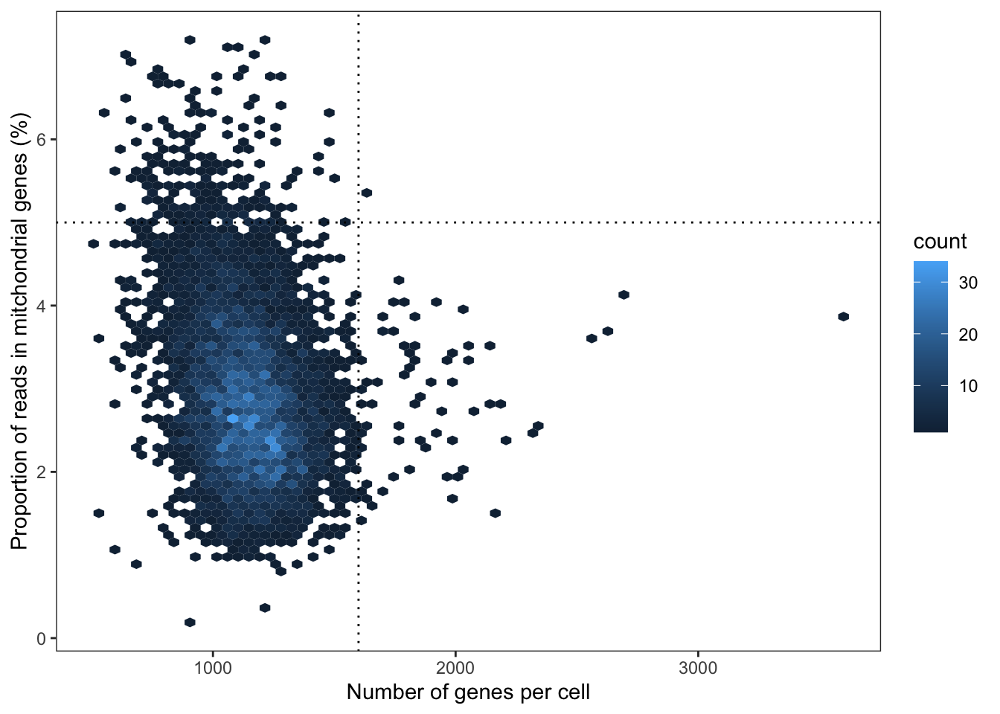
You’ll notice that the majority of cells have around 1500 genes detected, and only about 2.5% of molecules coming from the mitochondria. However, there are some exceptions:
- Cells above the horizontal line have too many mitochondrial mRNAs. This means that they may be apoptotic
- Cells to the right of the vertical line have too many genes detected. This means they may be multiplets (i.e. two cells stuch together rather than one)
Thus, we use the following line to remove any cells that have either more than 5% of mitochondrial molecules (likely apoptotic) or more than 1600 genes detected (likely multiplets):
t_cells <- subset(t_cells, subset = nFeature_RNA <= 1600 & percent.mt <= 5)This should significantly clean our data set and remove potential confounding factors.
3.4.2 Gene filtering
We now turn our attention to the genes. We have over 14,000 genes, but it’s likely that many of them are present at very low levels or even not present at all.
The following line takes each gene in our matrix and counts in how many cells it is present (i.e. it is not zero).
cells_expressing_gene <- rowSums(GetAssayData(t_cells) > 0)If we visualise these counts, we’ll notice that a lot of genes are not detected in any cell at all. These are simply taking up unnecessary space in our computer:
hist(cells_expressing_gene, breaks = 150, xlab="Number of cells expressing the gene", main="Gene expression distribution")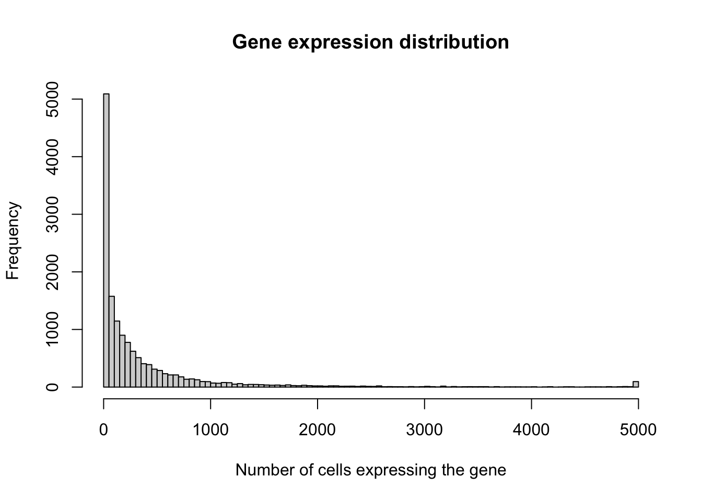
The following line removes any genes that are simply not found in any cell in the study:
t_cells <- subset(t_cells, features = rownames(t_cells)[cells_expressing_gene > 0])After filtering out both low quality cells and low quality genes, we are left with 4,979 cells and 14,832 genes:
t_cells## An object of class Seurat
## 14832 features across 4979 samples within 1 assay
## Active assay: RNA (14832 features, 0 variable features)3.5 Analysing gene expression data
Having done a stringent quality check, we are now ready to start analysing our data.
We being by performing normalisation and data transformation steps. These have the following aims: - Normalisation: to correct for gross differences in the depth of sequencing between samples. For example, maybe cells sequenced in the first experiment have a lot more molecules than cells sequenced in the second experiment (due to differences in how the sequencer ran). This difference would need to be removed. - Log-transformation: While some genes have 1 or 2 molecules, others will have 100s of molecules detected. This is a very wide range, and it makes our data have a very skewed distribution. Thus, we apply a logarithm operation, which makes the data nicely centered around a mean value (similarly to a normal distribution).
Both of these operations are performed by the following Seurat function:
t_cells <- NormalizeData(t_cells)Next, we identify which genes tend to vary the most from one cell to another. These tend to be the most interesting genes. If a gene is present at exactly the same level in every cell, then it’s not very interesting. If, instead, it is present at very high levels in one type of cell but at minimnal levels in another one, it could be a very interesting gene with a specific function in the cell type where it is present.
The following function ranks genes according to how much they tend to vary and identifies the top variable (often termed highly variable genes of HVGs. In this case we will get 2,000 of them).
t_cells <- FindVariableFeatures(t_cells, selection.method = "vst", nfeatures = 2000)Out of curiosity, what are these genes? The following code generates a simple visualisation telling us how high the level of each gene is on average (X axis) and how much it tends to vary between cells (Y axis).
# Identify the 10 most highly variable genes
top10 <- head(VariableFeatures(t_cells), 10)
# plot variable features with and without labels
plot1 <- VariableFeaturePlot(t_cells)
plot2 <- LabelPoints(plot = plot1, points = top10, repel = TRUE)
plot2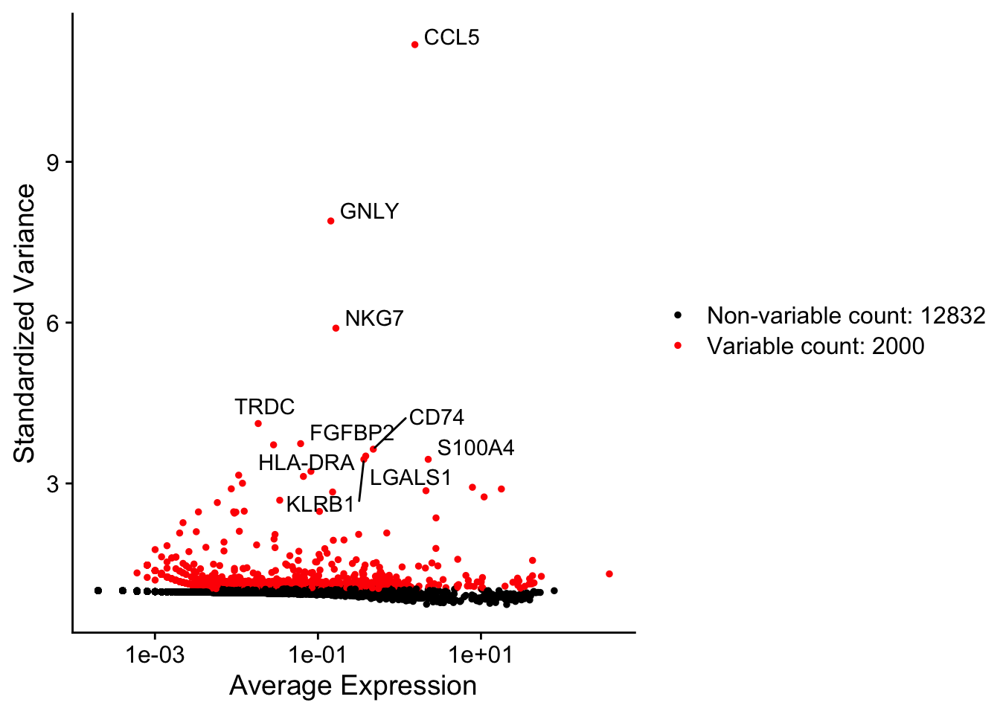
The most variable genes here are chemokines (CCL5), granulysins (GNLY) and other genes known to distinguish very specific types of T cells. This is encouraging: we are on the right path.
Finally, we scale the data in our expression matrix. This will make the rest of the analysis easier.
t_cells <- ScaleData(t_cells, features = rownames(t_cells))3.6 Data visualisation
Our pre-processing is now over! Let’s explore some interesting biology.
At the moment we have thousands of variables measured across thousands of cells. How do we even begin to make sense of so much information?
One common approach is dimensionality reduction, which is based on discarding the majority of these thousands of measurements and instead looking at a combination of those genes which are most informative.
Dimensionality reduction is a complex field of mathematical research, and thus a detailed explanation falls outside of the scope of this course. However, its aim is simple: summarising those thousands of genes (called here dimensions) into a handful of useful variable.
To do this, we use a combination of linear and non-linear techniques.
3.6.1 Principal component analysis (PCA)
We begin with a linear technique called principal component analysis (PCA). This technique is based on linear algebra and rotations around our feature space which identify a small set of gene combinations that summarise most of the information contained in our data set. These gene combinations are called “principal components” or PCs.
The following line performs PCA on our single-cell expression data:
t_cells <- RunPCA(t_cells, features = VariableFeatures(object = t_cells))The line above generated a list of principal components. But how many of these are useful? Let’s assess how much information each of them contains:
ElbowPlot(t_cells)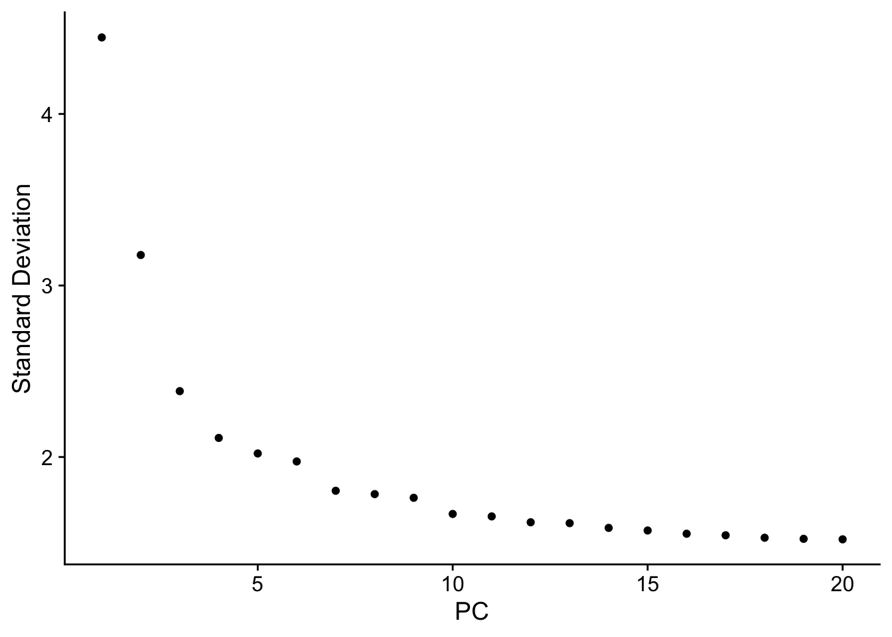
Note how the variable in the Y axis, which reflects the amount of new information contained by each component (X axis), slowly gets smaller and smaller. In fact, anything beyond the 10-th component is pretty much negligible. So 10 components are enough to summarise the majority of the information in our data set.
We have gone from 1000s of genes to 10 components.
3.6.2 Component embedding with UMAP
While 10 variables is better than 1000s of them, it is still a lot. Thus, we will take those 10 components and “embed” them into a 2-dimensional plot. We do this by using a technique called UMAP, which relies on bending our features space and identifying manifolds within it that could better explain our data structure.
This may sound quite abstract, but the results are very easily intepretable and informative. Let’s have a look.
The code block below takes the first 10 components we just calculated and embeds them with UMAP.
set.seed(1)
t_cells <- RunUMAP(t_cells, dims = 1:10)But what does this even mean? Well, let’s see for ourselves what the result looks like:
DimPlot(t_cells, reduction = "umap")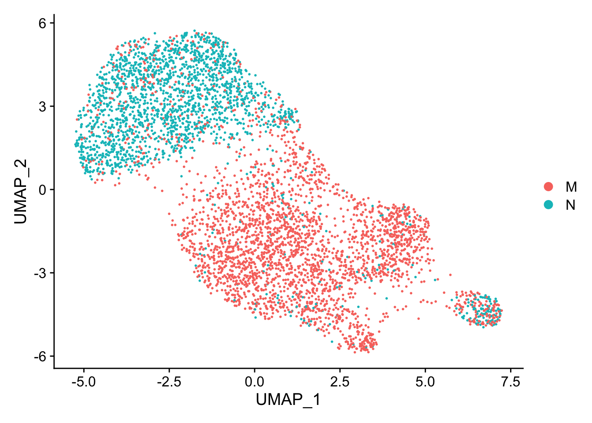
The graph above is the result from our PCA + UMAP attempt to reduce dimensions. In this graph, each dot represents a cell. The position of each cell in this plot is determined by a complex combination of the thousands of variables we measured. This can be interperted as follows:
- If two dots are close to each other, then it means that the two cells have very similar gene expression patterns
- If two dots are very far away, then that means the two cells are entirely different frome each other
In the plot above, red and blue indicates which cells are memory T cells and which are naive T cells.
In our published study, we did a lot of analysis to understand which T cells belonged to different cell subsets, and that information is included in our metadata table. Thus, let’s now re-do the graph above but colouring cells by their cell type identity:
DimPlot(t_cells, reduction = "umap", group.by = "cluster.id")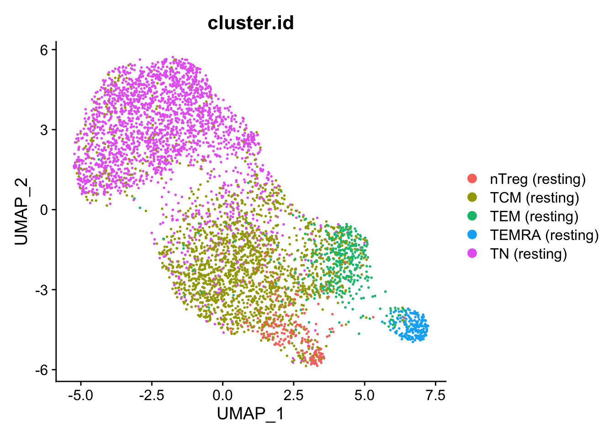
Note how naive cells are on one side of the plot, while memory cells are on the other. Within memory cells, central and effector memory cells separate from each other, and regulatory T cells (which have a completely different cell function and biology) also segregate into their own smaller group.
Seurat also allows us to visualise how active each of the thousands of genes in our matrix is in each cell. The code block below does this for four example genes: - SELL: Selectin, known to be expressed by naive T cells - KLRB1: Known to be expressed by effector memory T cells - PRF1: Marker of T cells with cytotoxic capacity - IL1R2A: Molecule needed by regulatory T cells to survive
FeaturePlot(t_cells, reduction = "umap", features = "SELL")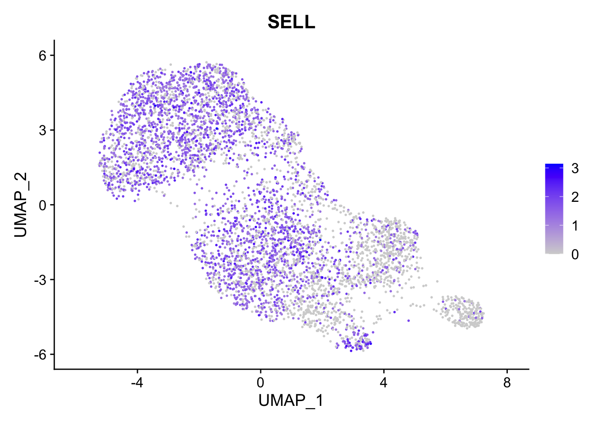
FeaturePlot(t_cells, reduction = "umap", features = "KLRB1")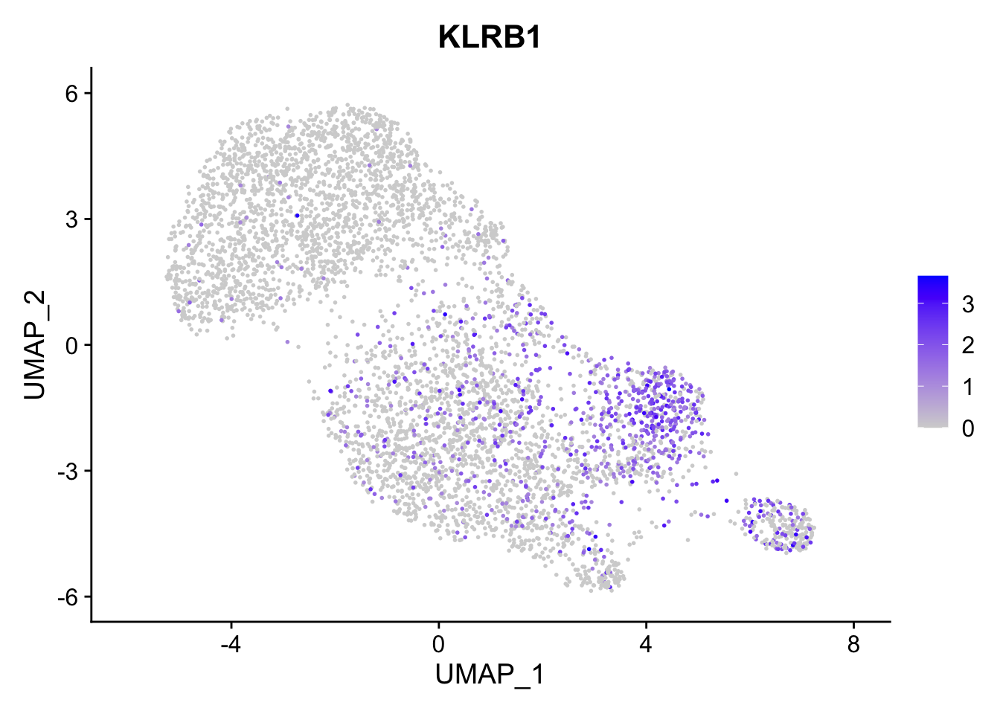
FeaturePlot(t_cells, reduction = "umap", features = "PRF1")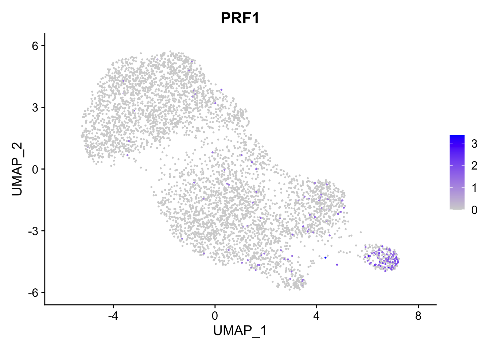
FeaturePlot(t_cells, reduction = "umap", features = "IL2RA")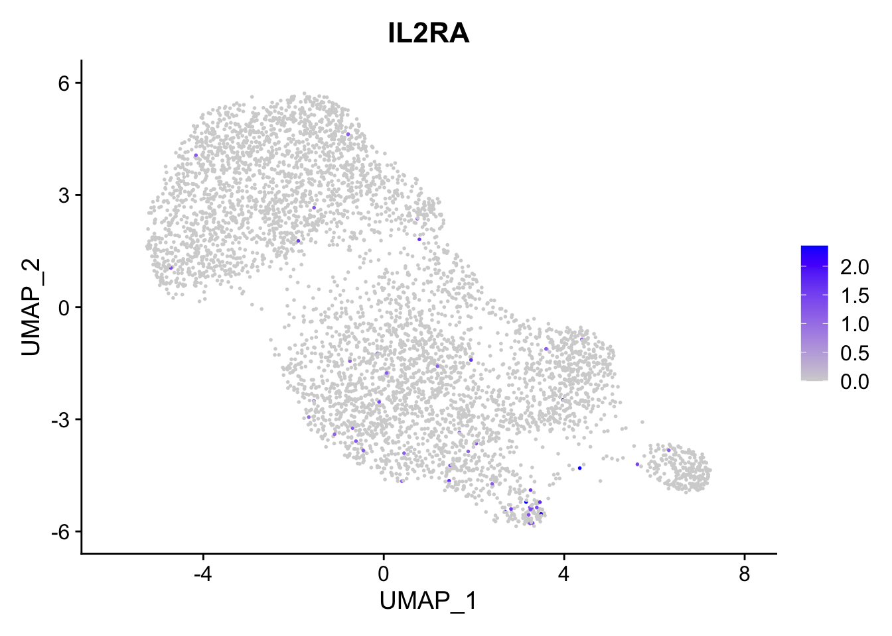
Indeed, each of these genes is detected in the cell type where we would expect it to be.
3.7 Clustering cells into groups
For this example, I provided you with pre-existing cell annotations which tell us which cell belongs to which group. But what if you don’t know that? That’s what happens in most real life applications where we use single-cell techniques.
If we don’t know how many cell types or subtypes we are expecting or how they look like, we can proceed to do a so-called “unsupervised” grouping or clustering of cells. This means that, rather than starting with a pre-conceived assumption about what our cells should look like, we simply compare them to one another and identify patterns. If a group of cells looks remarkably similar to each other, then we group them together.
The Seurat library provides a few functions that we can use to do this. These functions create a “graph” by connecting together cells which are similar to each other, and then identify groups or communities of similar cells, since they are very interconnected in the graph.
The following lines perform unsupervised cell clustering at a high level resolution:
set.seed(1)
t_cells <- FindNeighbors(t_cells, dims = 1:10)
t_cells <- FindClusters(t_cells, resolution = 0.3)## Modularity Optimizer version 1.3.0 by Ludo Waltman and Nees Jan van Eck
##
## Number of nodes: 4979
## Number of edges: 157220
##
## Running Louvain algorithm...
## Maximum modularity in 10 random starts: 0.8535
## Number of communities: 5
## Elapsed time: 0 secondsLet’s now look at the results from our unsupervised cell grouping:
DimPlot(t_cells, reduction = "umap")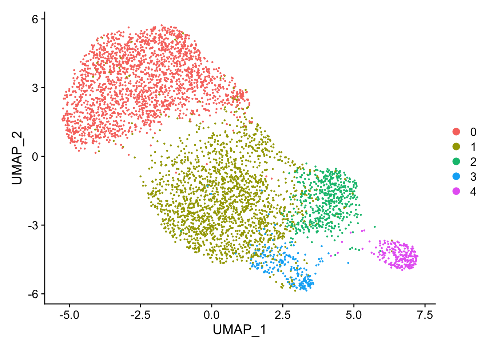
Perhaps unsurprisingly, the groups identified using these algorithm correspond almost exactly with the annotations I provided you with.
3.8 Identifying cell type markers
Now that we have grouped cells by similarity, how can we learn more about their biology and understand what each group means?
To do so, we take each gene in our expression table and compare its level between different cell groups: does it tend to be expressed at a significantly higher or lower level in one cell group compared to the remaining ones?
That is what the following function tests (note that this may take a little while to run. After all, this function is doing thousands of tests):
t_cell_markers <- FindAllMarkers(t_cells, only.pos = TRUE, min.pct = 0.25, logfc.threshold = 0.25)The result of running the line of code above is a list of all genes which are significantly higher or lower in one cell group compared to the others. This looks as follows:
t_cell_markers %>%
group_by(cluster) %>%
slice_max(n = 2, order_by = avg_log2FC)## # A tibble: 10 × 7
## # Groups: cluster [5]
## p_val avg_log2FC pct.1 pct.2 p_val_adj cluster gene
## <dbl> <dbl> <dbl> <dbl> <dbl> <fct> <chr>
## 1 3.89e-155 0.941 0.375 0.071 5.76e-151 0 LRRN3
## 2 2.17e-119 0.804 0.64 0.333 3.22e-115 0 CCR7
## 3 4.91e- 72 0.844 0.499 0.268 7.28e- 68 1 PASK
## 4 8.68e-125 0.813 0.531 0.197 1.29e-120 1 ITGB1
## 5 1.04e-274 2.62 0.721 0.118 1.54e-270 2 CCL5
## 6 1.84e-184 1.57 0.633 0.14 2.73e-180 2 LYAR
## 7 2.86e-113 2.21 0.689 0.152 4.25e-109 3 LGALS1
## 8 1.10e- 83 1.91 0.956 0.602 1.63e- 79 3 S100A4
## 9 0 3.77 0.833 0.007 0 4 NKG7
## 10 0 3.54 0.63 0.007 0 4 GNLYNote how R has calculated the average expression of that gene, as well as performed statistical testing to check if the gene is higher in any one group of cells. This is what the p values represent.
We can understand this information better by looking at it visually using a technique called a heatmap:
top_markers <- t_cell_markers %>%
group_by(cluster) %>%
top_n(n = 10, wt = avg_log2FC)
DoHeatmap(t_cells, features = top_markers$gene) + NoLegend()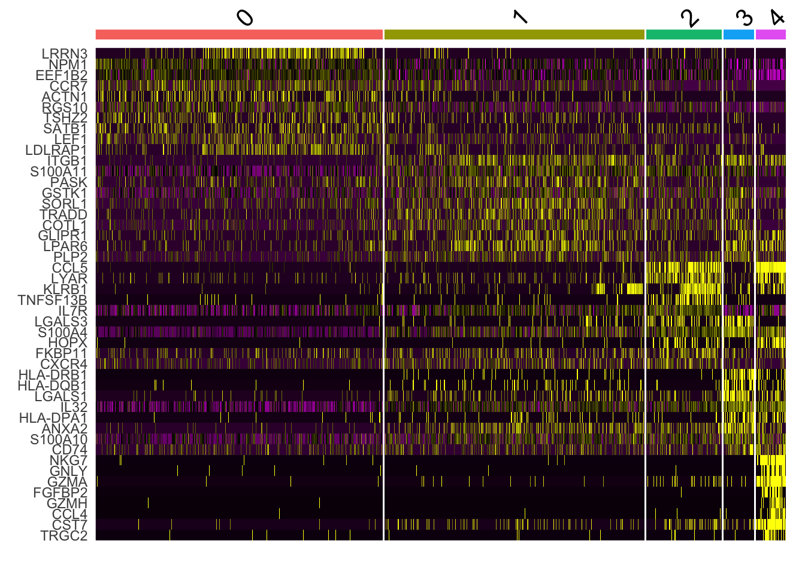
In this graph, each row is a gene and each (very thin) column is a cell. Black means the gene is not detected in that cell, and bright yellow means it is detected at a high level. Cells have been automatically grouped by similarity and divided into the four populations we identified using unsupervised clustering. Note how some populations (for example cluster 4) have a very clear signature of genes (in this case, genes which are all involved in cytotoxic capacity).
3.9 Conclusion
In this course, we used a medium-sized data set of human CD4+ T cells to understand some of the fundamental concepts in single-cell RNA-seq data analysis. We also gained hands on experience on how to analyse this data, including pre-processing, quality checks, visualisation, and unsupervised grouping of cells by similarity.
I hope you found this course useful.
3.10 R session
sessionInfo()## R version 4.1.0 (2021-05-18)
## Platform: aarch64-apple-darwin20 (64-bit)
## Running under: macOS Big Sur 11.5.2
##
## Matrix products: default
## LAPACK: /Library/Frameworks/R.framework/Versions/4.1-arm64/Resources/lib/libRlapack.dylib
##
## locale:
## [1] en_US.UTF-8/en_US.UTF-8/en_US.UTF-8/C/en_US.UTF-8/en_US.UTF-8
##
## attached base packages:
## [1] stats graphics grDevices datasets utils methods base
##
## other attached packages:
## [1] Matrix_1.5-4.1 hexbin_1.28.2 SeuratObject_4.1.3 Seurat_4.3.0 forcats_0.5.1 stringr_1.5.0 dplyr_1.1.2
## [8] purrr_1.0.1 readr_2.1.2 tidyr_1.3.0 tibble_3.2.1 ggplot2_3.4.2 tidyverse_1.3.2
##
## loaded via a namespace (and not attached):
## [1] readxl_1.3.1 backports_1.4.1 plyr_1.8.8 igraph_1.4.3 lazyeval_0.2.2 sp_1.6-0
## [7] splines_4.1.0 listenv_0.9.0 scattermore_1.1 digest_0.6.31 htmltools_0.5.5 fansi_1.0.4
## [13] magrittr_2.0.3 tensor_1.5 googlesheets4_1.0.0 cluster_2.1.4 ROCR_1.0-11 tzdb_0.2.0
## [19] globals_0.16.2 modelr_0.1.8 matrixStats_0.63.0 spatstat.sparse_3.0-1 colorspace_2.1-0 rvest_1.0.2
## [25] ggrepel_0.9.3 haven_2.4.3 xfun_0.39 crayon_1.5.2 jsonlite_1.8.4 progressr_0.13.0
## [31] spatstat.data_3.0-1 survival_3.5-5 zoo_1.8-12 glue_1.6.2 polyclip_1.10-4 gtable_0.3.3
## [37] gargle_1.2.0 leiden_0.4.3 future.apply_1.11.0 abind_1.4-5 scales_1.2.1 DBI_1.1.2
## [43] spatstat.random_3.1-5 miniUI_0.1.1.1 Rcpp_1.0.10 viridisLite_0.4.2 xtable_1.8-4 reticulate_1.28
## [49] htmlwidgets_1.6.2 httr_1.4.6 RColorBrewer_1.1-3 ellipsis_0.3.2 ica_1.0-3 pkgconfig_2.0.3
## [55] farver_2.1.1 sass_0.4.6 uwot_0.1.14 dbplyr_2.1.1 deldir_1.0-9 utf8_1.2.3
## [61] tidyselect_1.2.0 labeling_0.4.2 rlang_1.1.1 reshape2_1.4.4 later_1.3.1 cachem_1.0.8
## [67] munsell_0.5.0 cellranger_1.1.0 tools_4.1.0 cli_3.6.1 generics_0.1.3 broom_0.7.12
## [73] ggridges_0.5.4 evaluate_0.21 fastmap_1.1.1 yaml_2.3.7 goftest_1.2-3 knitr_1.43
## [79] fs_1.6.2 fitdistrplus_1.1-11 RANN_2.6.1 pbapply_1.7-0 future_1.32.0 nlme_3.1-162
## [85] mime_0.12 xml2_1.3.3 compiler_4.1.0 rstudioapi_0.13 plotly_4.10.1 png_0.1-8
## [91] spatstat.utils_3.0-3 reprex_2.0.1 bslib_0.4.2 stringi_1.7.12 highr_0.10 lattice_0.21-8
## [97] vctrs_0.6.2 pillar_1.9.0 lifecycle_1.0.3 jquerylib_0.1.4 spatstat.geom_3.2-1 lmtest_0.9-40
## [103] RcppAnnoy_0.0.20 data.table_1.14.8 cowplot_1.1.1 irlba_2.3.5.1 httpuv_1.6.11 patchwork_1.1.2
## [109] R6_2.5.1 bookdown_0.34 promises_1.2.0.1 renv_0.17.3-74 KernSmooth_2.23-21 gridExtra_2.3
## [115] parallelly_1.36.0 codetools_0.2-19 MASS_7.3-60 assertthat_0.2.1 withr_2.5.0 sctransform_0.3.5
## [121] parallel_4.1.0 hms_1.1.1 grid_4.1.0 rmarkdown_2.21 googledrive_2.0.0 Rtsne_0.16
## [127] spatstat.explore_3.2-1 shiny_1.7.4 lubridate_1.8.0